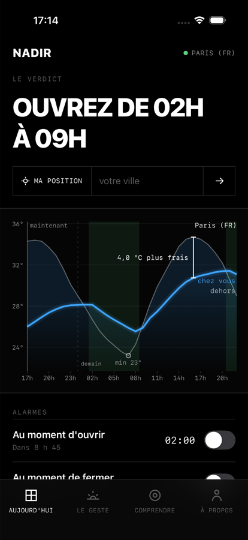
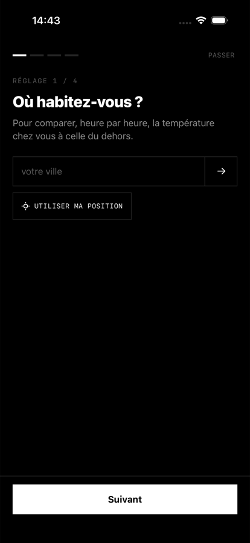
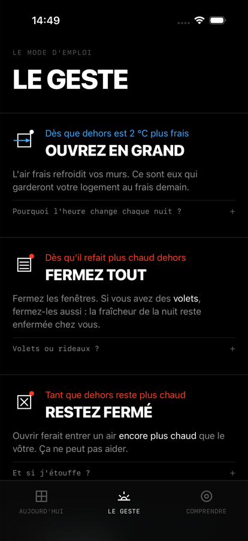
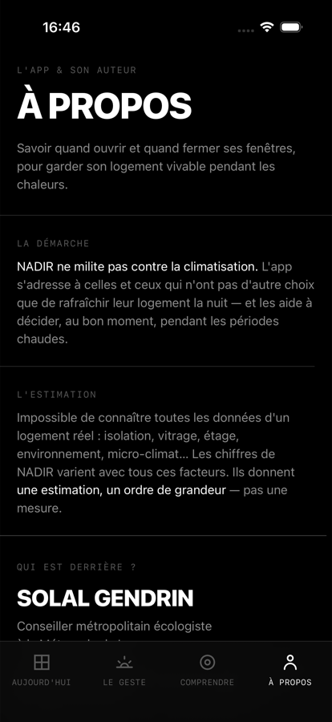

Le verdict
Ouvrez, ou gardez fermé
Un modèle thermique simule votre logement (murs, ventilation, exposition) sur les 30 prochaines heures et en tire une consigne simple.
Savoir quand ouvrir et quand fermer ses fenêtres. NADIR compare, heure par heure, la température chez vous à celle du dehors, et vous donne un verdict clair : « Ouvrez de 02h à 09h ».

Un modèle thermique simule votre logement (murs, ventilation, exposition) sur les 30 prochaines heures et en tire une consigne simple.
La courbe extérieure, la courbe intérieure simulée, et le créneau d'ouverture conseillé surligné en vert.
Des alarmes système qui sonnent même app fermée, puis se répètent à +3 et +6 minutes.
Petit et moyen : la courbe actualisée toutes les heures sur l'écran d'accueil, avec l'état de l'alarme.
Trois actions pour vos automatisations — y compris nourrir NADIR depuis un capteur connecté (HomeKit, Matter).
Aucune donnée collectée. Tout reste sur votre appareil. Météo : Open-Meteo.
Le jour, vos murs absorbent la chaleur comme une éponge. La nuit, l'air frais les décharge — si vous ouvrez au bon moment. NADIR trouve ce moment pour vous, en croisant la météo de votre ville avec l'inertie de vos murs, la ventilation possible et l'exposition de vos façades.



NADIR ne milite pas contre la climatisation. L'app s'adresse à celles et ceux qui n'ont pas d'autre choix que de rafraîchir leur logement la nuit, et les aide à décider au bon moment pendant les périodes chaudes.
Les chiffres donnent une estimation, un ordre de grandeur, pas une mesure : impossible de connaître toutes les données d'un logement réel — isolation, vitrage, étage, environnement, micro-climat.
Conseiller métropolitain écologiste à la Métropole de Lyon. Élu et développeur, je conçois des outils numériques gratuits et ouverts au service des habitants : Open Projets · Lyon Pocket.